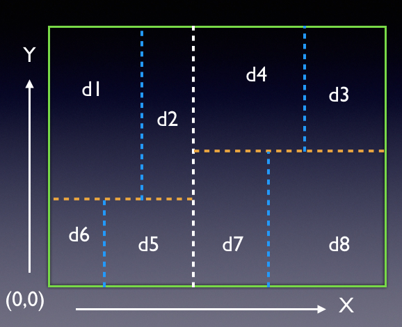

Kd Trees
KdTreeElement<K,E> implements a Kd Tree element and is inherited from BSTElement<K,E>
How does the KdTreeElement<K,E> work?
KdTreeElement<K,E> is a type of container that has two links that point
to two child KdTree elements. It uses the same conventions as the
BSTElement<E>.
At this point, you may be wondering how a KdTreeElement<K,E> differs from a
regular Binary Search Tree Element. The fundamental difference between the two classes
is that the KdTreeElement<K,E> is used to build search trees on spatial domains,
and can extend to 2 or more dimensions. It holds
additional pieces of data, the generic parameter K,
called the "key" like the binary search tree, except that it represents a spatial partitioning
value along a dimension. In addition, partitioning dimension is also specified at the
node and can be X or Y or Z (for 3D version of the tree). The key is used to enforce a spatial
ordering on the underlying spatial domain.
A typical example would be a Kd tree where all of the keys of
the left child are smaller than the keys of the right child, for that dimension. Kd Trees can be
used to partition space recursively along any of the dimensions and typically leads to a convex
partitioning of the original space. It can be used to represent 2D images, for instance and
belongs to the class of partitioning trees, as quadtrees (partitions into 4 equal sized regions
and used in 2D), octrees (into 8 regions in 3D). See the figures below for a better understanding.


See also
This tutorial gives an introduction to the usage of Kd trees. You can find the complete documentation of the features in the Doxygen documentation of the following classes and functions:
- KdTreeElement [Java] [C++] [Python]
- BSTElement [Java] [C++] [Python]
- BinTreeElement [Java] [C++] [Python]
- Tree [Java] [C++] [Python]
- Element [Java] [C++] [Python]
- ElementVisualizer [Java] [C++] [Python]
- LinkVisualizer [Java] [C++] [Python]
- Color [Java] [C++] [Python]
KdTreeElement - Tree Example
- We will illustrate a kd tree tree example that builds a 3 level tree. The partitioners are the keys in the tree. Click on the label button to see the partitioning dimension (X or Y).
- With the ColorGrid structure, we can represent the the spatial regions of the KD-tree as an image (2D tree); this can be used to represent shapes using a tree representaion.
Bridges Visualization
- Once all your code is in order, run your program.
- Assuming all your code is correct and it compiles correctly, a link to the Bridges website will be generated.
- Copy/paste this link into your favorite browser to view a visualization of the data structure you’ve just created.
- It should look something like this:
Well done! You’ve just created your Bridges Kd-Tree project!